INSTALLATION ART
KINETIC SCULPTURES
THE KINETIC MEURAL
I make two installation for public places; it's a conceptual work made with Blender software.
This innovative Solar-Powered kinetic display board is a modern fusion of art, engineering, and technology, designed to enrich public spaces like Indian railway stations. Built in a 2:1 aspect ratio, the display features 2048 individual 3"x3" red square plates, each powered by two 180-degree servo motors. These plates rotate dynamically to form visually striking real-time messages, event announcements, cultural visuals, abstract pixel portraits, and most importantly the accurate display of time.


SHAPE OF TIME
I make two installation for public places; it's a conceptual work made with Blender software.
This innovative kinetic sculpture clock is a sculptural time display built entirely from junk spare parts of Indian railway engines. Stand on actual train tracks, it creatively uses mechanical components gears, brakes, couplers, rods to form digits that shift and transform to show the current time. Each number is shaped by synchronized movements of the mechanical parts, powered by precise stepper motors. The design pays homage to India's rich railway legacy, transforming industrial waste into functional public art.


REFRAMING FAILURE
2024
In the way of achieving our goals it is desirable to have obstacles and failures. Reframing is the process of looking at failure from different perspective. This turns into an opportunity for our growth, learning or a positive change. Instead of viewing failure as a final outcome try again to reframe it. Reframing is an effort to overcome obstacles or adversities and achieve our goals.
Failure can come in many forms like in a professional field, may be emotionally or related to your finance. Facing struggles and failures are a natural part of life which would lead to personal growth and strengthen ourselves.
REFRAMING FAILURE
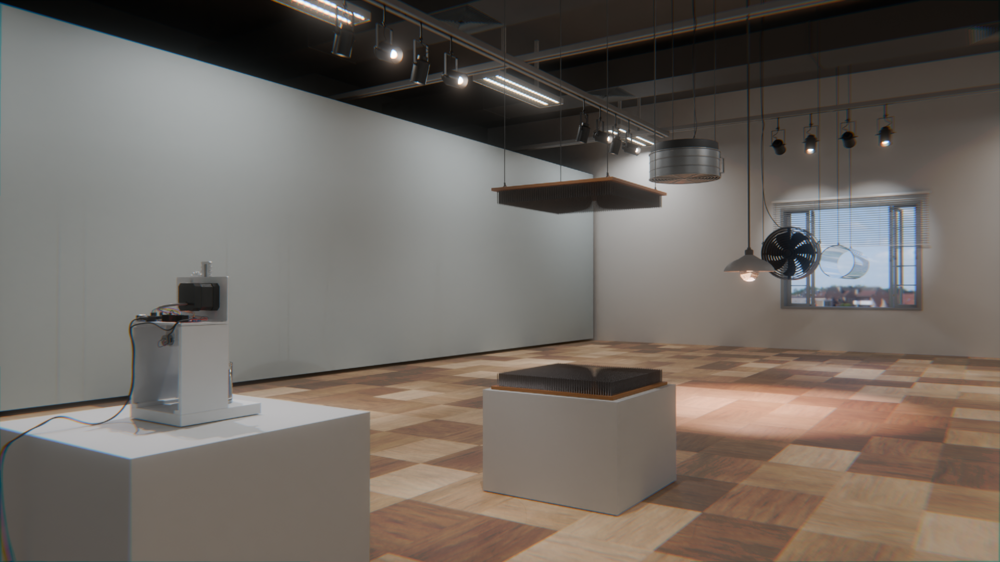
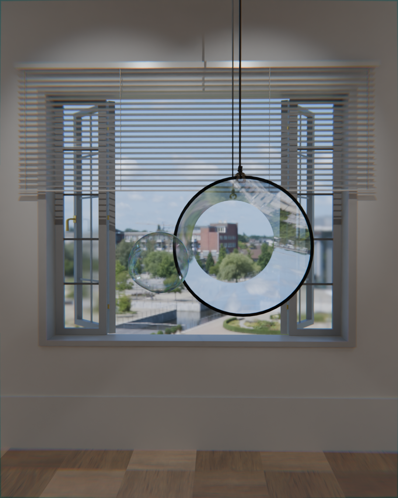

CONSEQUENCES
I did this to highlight the pollution of our environment. To make other people aware of the society by work. I collected garbage from Garbage Mountain & Clears some area. we do not use the non-renewable materials properly in our daily use, we are causing our world beauty and health and environmental pollution.
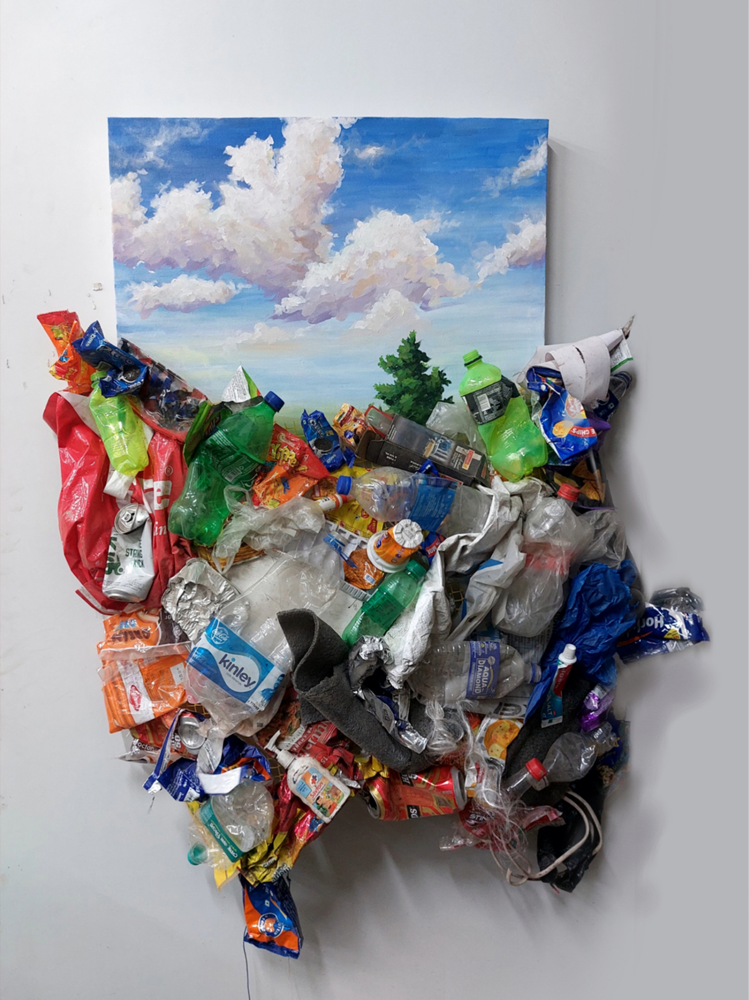
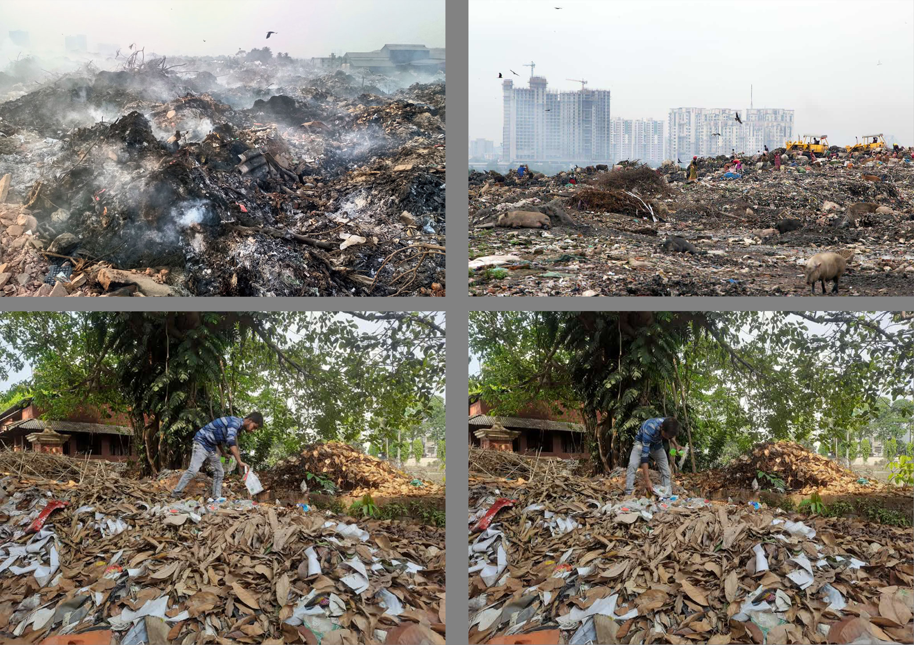
STARLING
Starlings are birds that fly together in large groups, creating flowing patterns in the sky. I first saw this phenomenon on the internet, and later I noticed birds forming similar patterns above my village. In this work, I tried to study and explore the movement and flow of these birds.
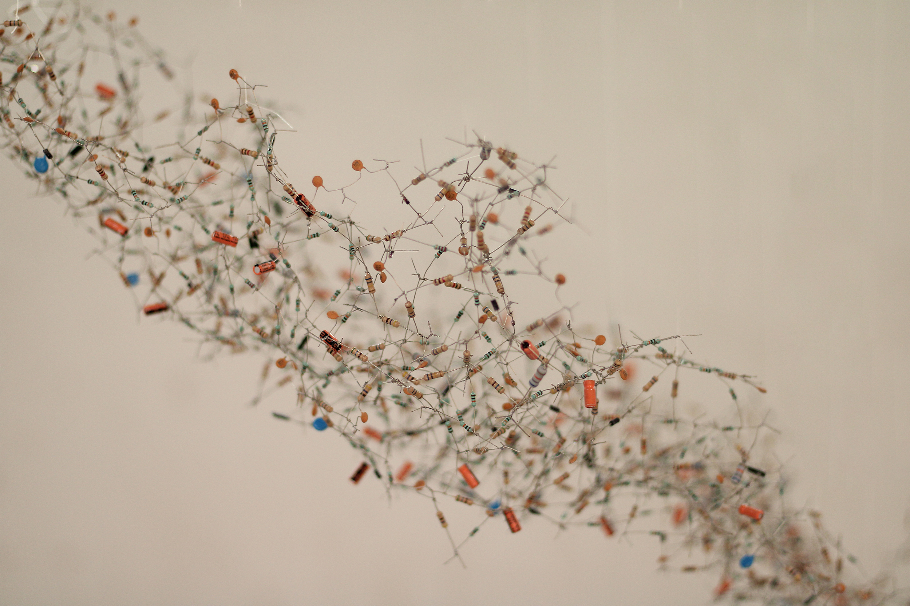
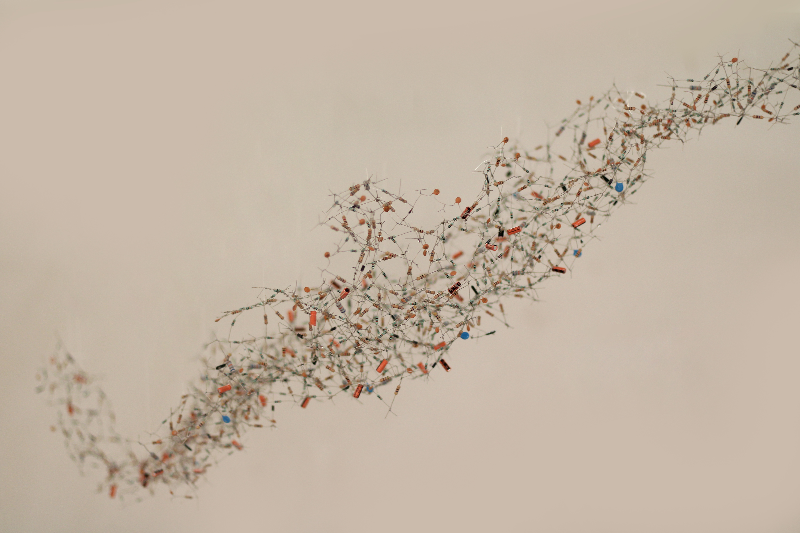

STRUGGLE
Every milestone in my life has been met with defeat Still I tried to stand up and reach my goal. "Struggle" is generally refers to a difficult or challenging effort to achieve a milestone or overcome an obstacle. It is a common aspect of human experience and can be encountered in various aspects of life, including personal, professional, social, and emotional.
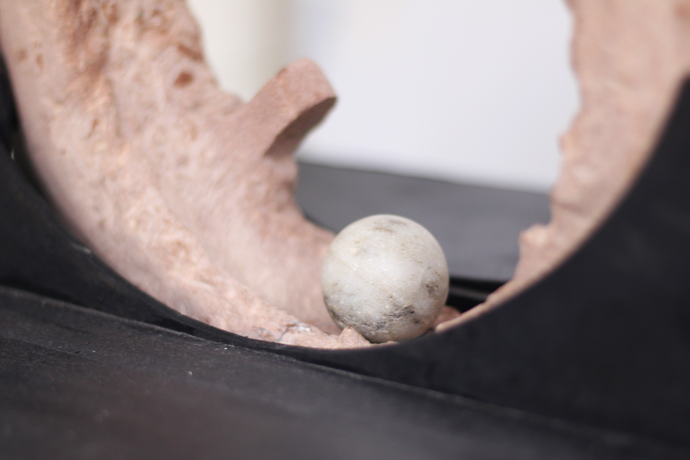
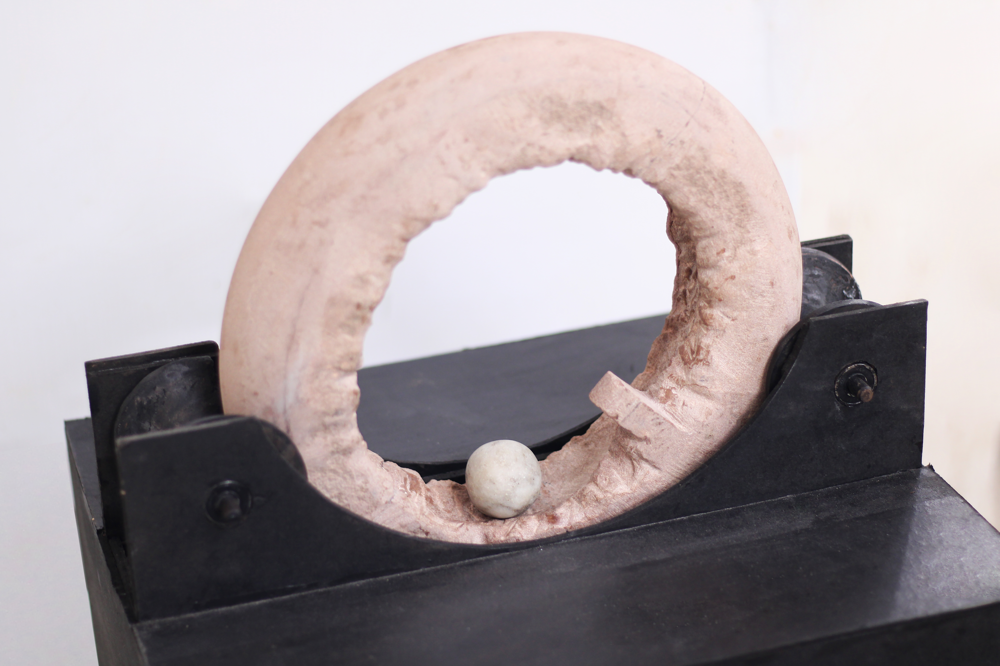
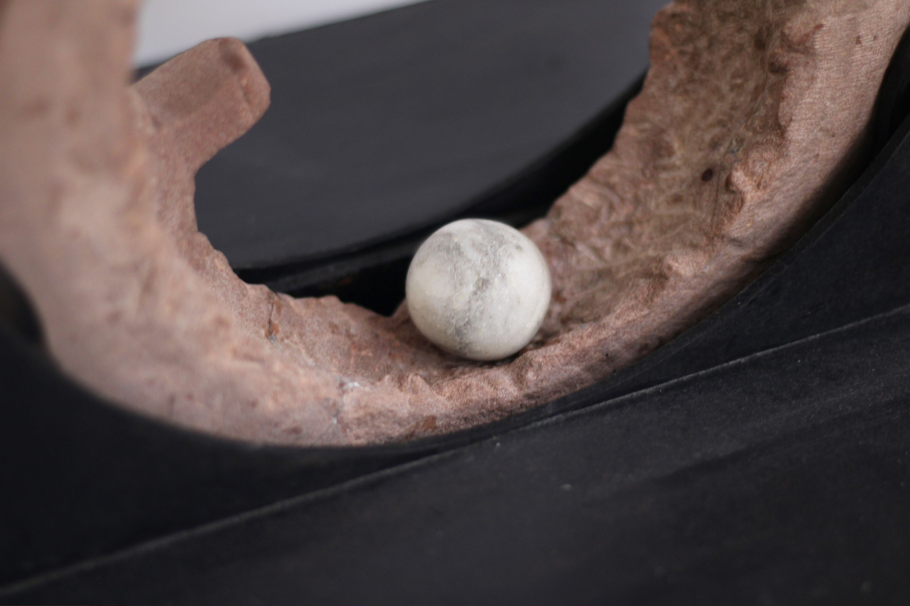
MOUSE II
Mouse_II During my fine art studies, I began working digitally and spent much of my time with computers, monitors, and mice. From this experience, I imagined a surreal situation in which ceramic mice come alive and begin consuming circuit boards and other electronic components. The work reflects my growing dependence on digital technology and blurs the boundary between the living and the mechanical. I titled it Mouse_II because it continues an earlier idea explored in my brass sculpture, Mouse_I.


MAN BECOME MACHINE
In the train while commuting to college I have seen some government and private employee passengers. Those who want leave from their work. They want to relax and get away from working like machines.They go to work according to themselves. relaxation is a personal experience, So it is important to find activities that work best to you. Take some time for yourself prioritize self care.
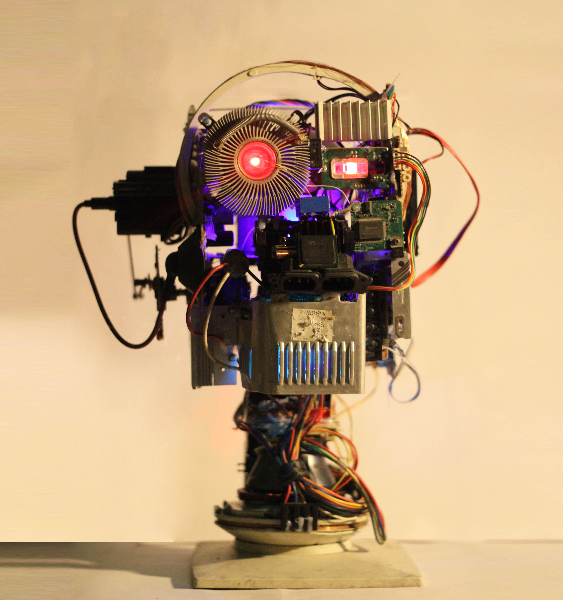
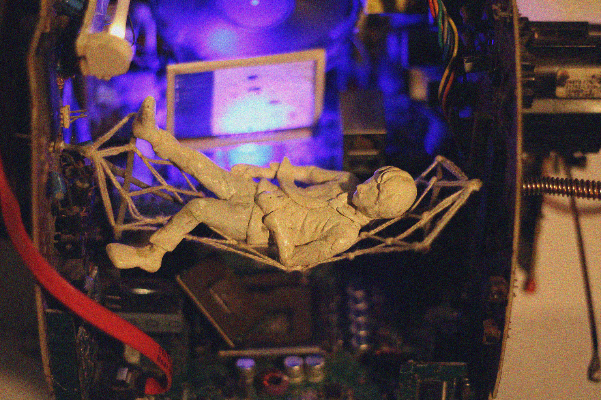